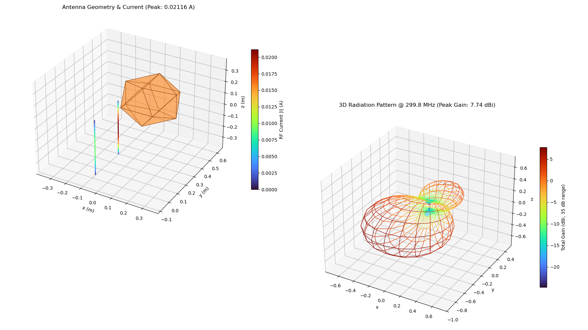
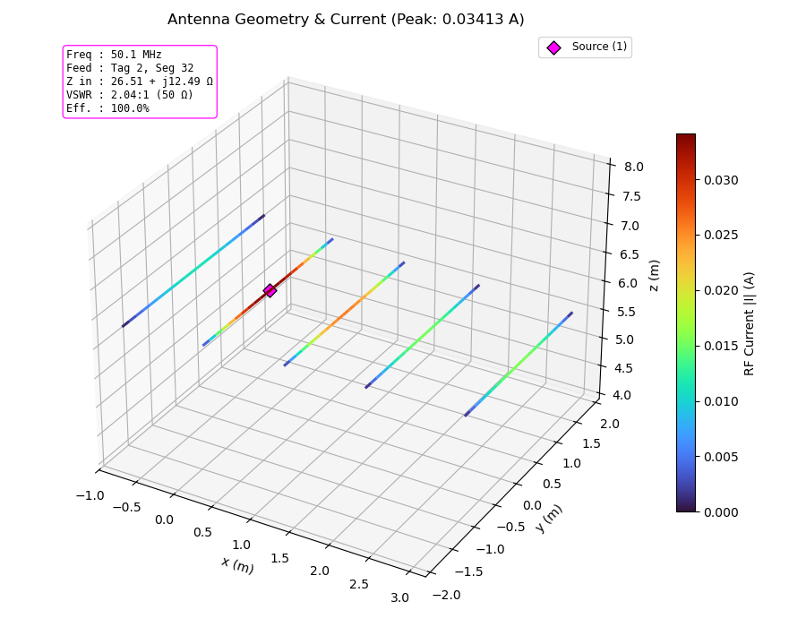
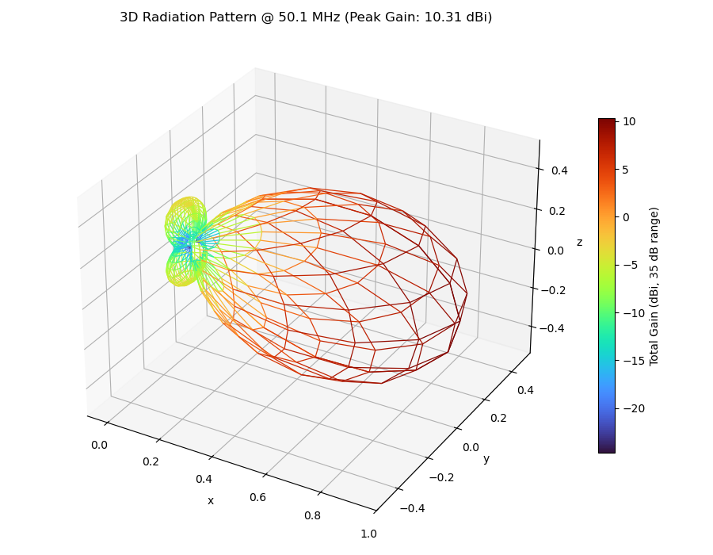
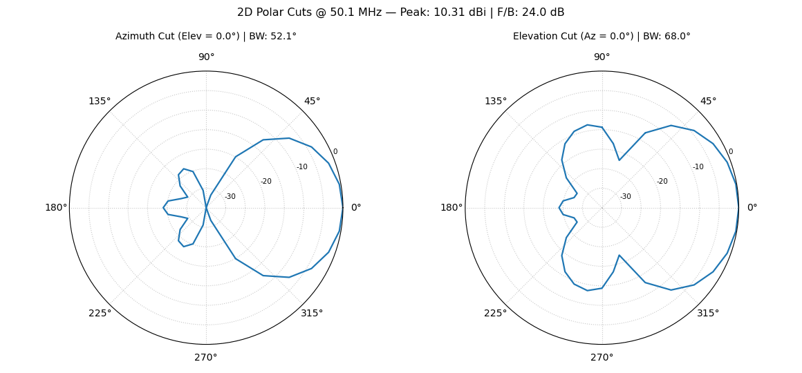

Mike Markowski,
mike.ab3ap@gmail.com
This page is hosted at both University of Delaware and GitHub

This is a complete Python and NumPy conversion of the classic NEC-81 (v2.2) implementation of the Numerical Electromagnetics Code (NEC-2). It preserves the full Method of Moments (MoM) solver for thin wires, surface patches, wire-to-patch junctions, reflection and rotational symmetry, transmission lines, two-port networks, lumped and distributed impedance loading, Sommerfeld/Norton ground, near-field grids, and Numerical Green's Functions (N.G.F.), while adding modern configuration files, 2D/3D Matplotlib plots, and an optional PySide6 GUI.
Developed at Lawrence Livermore National Laboratory by Gerald Burke and Andrew Poggio in the late 1970s and early 1980s, NEC-2 became the standard antenna modeling engine for amateur radio operators, engineers, and researchers alike. The codebase converted here traces back to David J. Pinion's 1989 NEC-81 v2.2 distribution and OH3MCK's 1991 Sun-4 Unix port.
Original Fortran NEC decks are unforgiving with strict 80-column field alignments and terse two-letter cards. This Python port accepts both classic fixed-column decks and modern comma- or space-delimited decks, while also supporting self-documented configuration files and an interactive GUI.
The core solver requires only numpy, with optional extras
for Matplotlib plots and the PySide6 GUI. be sure you have the latest
version. The initial line by line port following the Fortran was slow. It
has been updated using vectorization throughout and is significantly faster
than that first port. Install directly via GitHub or download the latest release
archives:
# Core solver (headless)
$ pip install "nec81 @ git+https://github.com/ab3ap/nec81.git"
# With Matplotlib plots or full GUI (replace [plots] with [full] as needed)
$ pip install "nec81[full] @ git+https://github.com/ab3ap/nec81.git"
Running nec81.py with no arguments or with a single
.nec or .cfg file opens the PySide6 GUI
interface directly. Passing an output report file, configuration flag,
plotting flag, or --cli runs headlessly in command-line mode:
$ nec81.py # Open GUI with a new deck $ nec81.py 06_6m_5el_yagi.nec # Open deck in GUI $ nec81.py 06_6m_5el_yagi.cfg # Open config in GUI $ nec81.py 06_6m_5el_yagi.nec 06_6m_5el_yagi.out # Run batch CLI mode $ nec81.py --config 06_6m_5el_yagi.cfg # Run from config file $ nec81.py --write-config-template my_antenna.cfg # Generate starter .cfg $ nec81.py --cli # Original Unit 23/24 prompt
| Option | Description |
|---|---|
[inputFile] |
Open a .nec deck or .cfg file in the GUI (when given alone), or specify the input deck for batch CLI mode. |
[outputFile] |
Destination path for the printed NEC report (implies headless CLI mode). |
-o / --cli / --no-gui |
Run in command-line mode without opening the GUI (prompts interactively for Unit 23 and Unit 24 if no files are given). |
-g / --gui [DECK_OR_CFG] |
Explicitly launch the PySide6 GUI interface, optionally preloading a .nec or .cfg file. |
-c / --config FILE |
Load settings (and optional embedded model cards) from a .cfg file and run in CLI mode. |
-t / --write-config-template [PATH] |
Generate a commented starter configuration file (default: nec81.cfg) and exit. |
--plots3d / --no-plots3d |
Enable or disable Matplotlib plot generation in CLI mode. |
-d / --plot-directory DIR |
Output directory for saved plot images (default: plots). |
--show-sources / --no-show-sources |
Show or hide excitation source markers (magenta diamonds) on 3D geometry plots. |
--show-loads / --no-show-loads |
Show or hide impedance load markers (green squares) on 3D geometry plots. |
--show-plots / --no-show-plots |
Keep interactive Matplotlib windows open for rotation and zooming after completion. |
Launching nec81.py opens a six-tab PySide6 GUI:
GM, GR, GS, and GX transforms in deck order before running the solver.F5) with live stdout streaming.Here are examples of plots from NEC-81. In this case, a 5-element Yagi for 6m is shown. You can open each image in another tab to see it in more detail.



antennaGeometry3d: 3D wire segments colored by solved RF current magnitude |I| (Amps), exact triangular/quadrilateral surface patch polygons, and optional source/load markers.radiationPatternWireframe3d: Dynamic-range clamped (35 dB) color-graded 3D far-field wireframe pattern labeled with frequency and peak gain (dBi).polarCuts: Side-by-side 2D polar Azimuth and Elevation cuts through the main lobe with automatic Front-to-Back ratio and −3 dB beamwidth annotations (or multi-frequency color overlays during FR sweeps).frequencySweep: Three-panel 2D chart showing VSWR, feedpoint resistance/reactance (R + jX), and peak gain across frequency sweeps.Near_Electric_Field3d / Near_Magnetic_Field3d: 3D spatial scatter plots of near-field peak magnitudes for NE and NH grids.
Configuration files use plain-text var val lines. Comments begin
with #, and relative file paths are resolved from the directory
containing the configuration file. Sample .nec card decks and .cfg
configs are available in examples.tar.bz2.
Many times examples are better than descriptions.
| Setting | Type | Default | Description |
|---|---|---|---|
inputFile |
path | "" |
Path to an external .nec deck (omit when using embedded card.* groups). |
outputFile |
path | "" |
Destination path for the standard NEC text report. |
plots3d |
bool | false |
Master switch (true/false) enabling plot generation. |
plotGeometry |
bool | true |
Generate 3D wire & patch geometry with RF current magnitude coloring. |
plotPatterns |
bool | true |
Generate 3D far-field pattern wireframes and 2D polar Azimuth/Elevation cuts. |
plotFields |
bool | true |
Generate 3D scalar scatter plots for NE / NH near-field grids. |
showSources |
bool | true |
Overlay excitation source locations (EX) on the 3D geometry plot. |
showLoads |
bool | false |
Overlay impedance-loaded segments (LD) on the 3D geometry plot. |
plotDirectory |
path | plots |
Directory where rendered plot images are saved. |
plotFormat |
string | png |
Image format passed to Matplotlib (png, svg, or pdf). |
showPlots |
bool | true |
Keep interactive Matplotlib windows open after saving images. |
Instead of referencing an external .nec file, an entire antenna
model can be written inside a configuration file using
card.<group>.<field> value lines. Groups are emitted in
the order they first appear and accept either two-letter NEC card codes or
descriptive names:
card.title.kind comment card.title.text "Center-fed half-wave dipole at 299.79 MHz" card.commentEnd.kind commentEnd card.driven.kind wire card.driven.tag 1 card.driven.segments 21 card.driven.x1_m -0.25 card.driven.y1_m 0 card.driven.z1_m 0 card.driven.x2_m 0.25 card.driven.y2_m 0 card.driven.z2_m 0 card.driven.radius_m 0.001 card.geometryEnd.kind geometryEnd card.geometryEnd.groundFlag 0 card.frequency.kind frequency card.frequency.stepType 0 card.frequency.count 1 card.frequency.start_MHz 299.792458 card.source.kind excitation card.source.type 0 card.source.tag 1 card.source.segment 11 card.source.real_V 1 card.source.imag_V 0 card.pattern.kind radiationPattern card.pattern.mode 0 card.pattern.thetaCount 19 card.pattern.phiCount 37 card.pattern.flags 1000 card.pattern.startTheta_deg 0 card.pattern.startPhi_deg 0 card.pattern.thetaStep_deg 10 card.pattern.phiStep_deg 10 card.execute.kind execute card.end.kind end outputFile dipole.out plots3d true showSources true showLoads false plotDirectory plots plotFormat png showPlots true
The original NEC-81 documentation is recommended to fully understand options available. For those already familiar, here is a summary of supported cards in this python version of NEC-81.
| Code | Descriptive Name | Parameters | Purpose |
|---|---|---|---|
CM | comment | Text | Comment line in header section. |
CE | commentEnd | Text | Ends the initial comment header. |
GW | wire | Tag, Segments, X1_m, Y1_m, Z1_m, X2_m, Y2_m, Z2_m, Radius_m | Straight wire divided into equal segments. |
GC | wireTaper | Unused1, Unused2, SegmentLengthRatio, StartRadius_m, EndRadius_m | Tapers segment length and radius on preceding GW (when Radius=0). |
GA | arc | Tag, Segments, Radius_m, Start_deg, End_deg, WireRadius_m | Circular wire arc in the X-Z plane. |
GH | helix | Tag, Segments, TurnSpacing_m, Length_m, StartRadiusX_m, StartRadiusY_m, EndRadiusX_m, EndRadiusY_m, WireRadius_m | Uniform or tapered helix / spiral. |
SP | surfacePatch | Tag, Shape, X1_m, Y1_m, Z1_m, X2_orTheta, Y2_orPhi, Z2_m | Defines an arbitrary (0), rectangular (1), triangular (2), or quadrilateral (3) patch. |
SC | patchContinuation | Unused, Shape, X3_m, Y3_m, Z3_m, X4_m, Y4_m, Z4_m | Supplies remaining corners for SP or SM patches. |
SM | multiplePatches | CountX, CountY, X1_m, Y1_m, Z1_m, X2_m, Y2_m, Z2_m | Generates a rectangular CountX × CountY grid of surface patches. |
GM | move | TagIncrement, Copies, RotateX_deg, RotateY_deg, RotateZ_deg, TranslateX_m, TranslateY_m, TranslateZ_m, StartTag | Rotates, translates, or duplicates structure elements. |
GR | rotate | TagIncrement, Copies | Generates cylindrical rotational copies about the Z axis. |
GS | scale | Conversion, Unused, Scale | Scales all structure coordinates and radii (1 = ft→m, 2 = in→m, 0 = factor). |
GX | reflect | TagIncrement, Axes | Reflects structure across coordinate planes (100=X, 010=Y, 001=Z) and enables symmetry. |
GF | greenFunctionRead | PrintFlag | Reads a precomputed Numerical Green's Function file (must precede geometry). |
GP | suppressGeometryPrint | — | NEC-81 extension: suppresses the printed segmentation table. |
GE | geometryEnd | GroundFlag, PlotFlag | Ends geometry input, builds connectivity, and checks junctions. |
FR | frequency | StepType, Count, Unused1, Unused2, Start_MHz, Step_MHz_orRatio | Sets single frequency or linear (0) / multiplicative (1) frequency sweep. |
EX | excitation | Type, Tag, Segment, Flags, Real_V, Imag_V, Param3..6 | Voltage source (0), incident plane wave (1–3), elementary current source (4), or voltage discontinuity (5). |
GN | ground | Type, Radials, Unused1, Unused2, RelativePermittivity, Conductivity_Spm, RadialLength_m, RadialRadius_m | Free space (-1), reflection-coefficient ground (0), perfect ground (1), or Sommerfeld/Norton ground (2). |
GD | secondMedium | Unused1..4, RelativePermittivity, Conductivity_Spm, BoundaryDistance_m, Depth_m | Cliff or radial ground screen second medium parameters for far fields. |
LD | load | Type, Tag, FromSegment, ThroughSegment, Resistance_Ohm, Inductance_H, Capacitance_F | Series/parallel RLC (0–3), fixed Z (4), or finite wire conductivity/permeability (5). |
NT | network | Tag1, Segment1, Tag2, Segment2, Y11Real_S, Y11Imag_S, Y12Real_S, Y12Imag_S, Y22Real_S, Y22Imag_S | Connects a two-port short-circuit admittance network between two segments. |
TL | transmissionLine | Tag1, Segment1, Tag2, Segment2, Z0_Ohm, Length_m, Y1Real_S, Y1Imag_S, Y2Real_S, Y2Imag_S | Connects a transmission line (negative Z0 crosses line; Length=0 uses straight-line distance). |
CP | coupling | Tag1, Segment1, Tag2, Segment2 | Computes maximum coupling between up to 5 specified segments. |
EK | extendedKernel | Option | Enables (0) or disables (-1) the extended thin-wire kernel. |
KH | interactionRange | Unused1..4, Range | Sets the distance threshold (in wavelengths) for approximate matrix integration. |
PT | currentPrint | Control, Tag, FromSegment, ThroughSegment | Controls printed wire current tables or receiving pattern normalization. |
PQ | chargePrint | Control, Tag, FromSegment, ThroughSegment | Controls printed segment charge density tables. |
PL | plotFlags | Flag1, Flag2, Flag3, Flag4 | Writes auxiliary plot data to fort.8. |
NE | nearElectricField | Coordinates, CountX, CountY, CountZ, StartX_m, StartY_m, StartZ_m, StepX_m, StepY_m, StepZ_m | Evaluates near electric field (Ex, Ey, Ez) on a rectangular (0) or spherical (1) grid. |
NH | nearMagneticField | Coordinates, CountX, CountY, CountZ, StartX_m, StartY_m, StartZ_m, StepX_m, StepY_m, StepZ_m | Evaluates near magnetic field (Hx, Hy, Hz) on a rectangular (0) or spherical (1) grid. |
RP | radiationPattern | Mode, ThetaCount, PhiCount, Flags, StartTheta_deg, StartPhi_deg, ThetaStep_deg, PhiStep_deg, Range_m, Normalization_dB | Evaluates far-zone radiation pattern, power/directive gain, polarization, and axial ratio. |
WG | greenFunctionWrite | — | Writes factored N.G.F. matrices to disk for reuse in subsequent runs. |
XQ | execute | Option | Executes matrix fill, solve, and requested field calculations. |
NX | nextStructure | — | Resets structure state to process another deck in the same input stream. |
EN | end | — | Terminates execution and prints total run time. |
Many manufacturers provide antenna patterns in Antenna Systems – Standard Format for Digitized Antenna Patterns WG16.99.050 format. Link budget simulators designed for NSMA format files often cannot use NEC output. This version of NEC-81 provides the -a or GUI option to write output in an NSMA format .adf file. An example of a NEC-81 generated adf can be seen at NSMA viewer.
The solver core was translated from the 15 Fortran source files of NEC-81
v2.2 into modular Python files sharing a unified NECState
dataclass in place of Fortran COMMON blocks:
nec_state.py, mainsa.py, main2.pydatagn.py, datagn2.pycmset.py, eksc.py, etmns.py, hintg.py, intrp.py, load.pyfbngf.py, factr.py, factrs.py, netwk.py, couple.pynfpat.py, rdpat.pynec81.py, config.py, deck.py, plots3d.py, gui.pynumpy is required to run the
NEC-81 solver engine. matplotlib is required for 2D/3D plots,
and PySide6 is required only when launching the GUI.